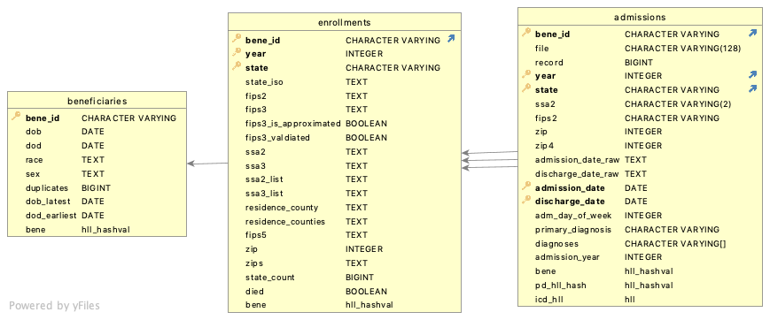

Medicare: Building a Data Warehouse from ResDac Files
See also
Example: Medicare Processing Pipeline with Synthetic Data — a step-by-step guide to running the full pipeline against a publicly available synthetic dataset (no data use agreement required) and exploring the results in a pre-built Apache Superset dashboard.
Medallion architecture of the Medicare warehouse
The Medicare warehouse is organized as a Medallion architecture: data moves through Bronze, Silver, and Gold layers, and each layer is derived only from the layer beneath it.
Bronze: the raw
cms.*tables. Every original ResDac file is loaded into its own table, with the data kept as delivered.Silver: the cleansed and unified layer. It contains the federated views that combine the per-file Bronze tables (
medicare.psand its companionmedicare._ps,medicare.mbsf_d, and the admissions viewmedicare.ip) and the curated tables built from them:medicare.beneficiaries,medicare.enrollments, andmedicare.admissions.Gold: the QC aggregates — the
medicare.qc_*materialized views described in Creating QC Tables.
Every ingested (Bronze) table carries two provenance columns: FILE, the
name of the original raw file, and RECORD, the line number of the record
within that file (see
Storing raw data in the Database).
These two columns are what make Dorieh’s lineage fine-grained. Column-level
lineage records how each output column is computed from input columns, while
FILE and RECORD add row-level lineage by anchoring every row to the
exact line of the exact source file it came from. Cell-level lineage is the
combination of the two: for any single value in a Silver table you can
recover both the formula that produced it and the raw record it was derived
from.
Processing pipeline
Medicare Pipeline Steps
Current pipeline consists of 5 steps, each represented as a sub-workflow:
Grant
SELECTprivileges (i.e., read access) to all newly created tables (this step is actually a command line tool, not a workflow)
Ingestion of raw data
Ingestion of raw data is incremental, i.e. tables that are already in the database will not be dropped (deleted). However, any table with the name found in input path will be replaced. Please note, that every raw record is identified by the tuple consisting of the original file name and the line number in that file.
Note
If no raw data is given or --input parameters points
to a non-existent or empty directory, the pipeline will skip ingestion
step and will process the raw data that is already in the database.
Ingestion as a part of the data pipeline is only implemented for data in the format as it comes from ResDac. Metadata for ingestion is taken from FTS files that accompany ResDac deliverables.
Important
In case of Medicare data in posession of NSAPH organization, we only have original ResDac data for years 2011-2014 and 2016-2018. Therefore, the pipeline is unable to ingest the data for other years (1999-2010 and 2015).
See Files for 1999 to 2010 for more information.
See Ingesting Raw Files for processing details
Processing Data in the Database
During in-database processing all tables, views and materialized views are completely replaced. Old tables are dropped and new ones are created from scratch.
See Combining raw files into a single view for processing details.
Medicare Pipeline References
See Medicare data ingestion and processing pipeline for the pipeline code
See Medicare data model definition for formal data model definition.
Ingesting Raw Files
Overview of Ingesting Raw Medicare Files
There are two types of tables:
Patient summary, aka enrollment, aka denominator
Inpatient admissions
Unfortunately, the structure of medicare files is different for almost every year.
Summary files for some years come in pairs:
mbsf_ab_summarymbsf_d_cmpnts
For other years we have a single file:
mbsf_abcd_summary
Inpatient admissions files always follow medpar_all_file pattern.
Columns vary from year to year even for similarly named files, new columns are being added and column names are sometimes changed.
To add insult to injury, for years prior to 2011 (1999-2010) we do not have original files, but preprocessed files with patient summary (called denominators) and admissions. They are in SAS 7BDAT format, however columns are also different for different years. Please refer to Files for 1999 to 2010 section for details.
Storing raw data in the Database
Given the difference in file structures we create a separate table for every file. However, to make it easier to join these tables we:
Add a column containing original file name to every table
Add generated columns with uniform names for:
Year
State
Bene_Id
Zip code
Originally, these data is stored in columns with the following possible names:
"bene_id": (None, ["bene_id", "intbid", "qid", "bid_5333*"]),
"state": (None, ["state", "ssa_state", "state_code",
"bene_rsdnc_ssa_state_cd", "state_cd",
"medpar_bene_rsdnc_ssa_state_cd"]),
"zip": (None, ["zip", "zipcode", "bene_zip_cd", "bene_zip",
"bene_mlg_cntct_zip_cd",
"medpar_bene_mlg_cntct_zip_cd"]),
"year": (None, ["year", "enrolyr", "bene_enrollmt_ref_yr",
"rfrnc_yr"])
When a table has no natural primary key (admission tables) we add a record number column. This column ha sno meaning but allows to trace a record to the original data.
Files for 1999 to 2010
Between 1999 and 2010, original Medicare ResDAC raw datasets are not available to NSAPH. Instead, only partially preprocessed files provided by external collaborators are available. These have been stored historically on RCE in two separate directories:
denominator/
inpatient/
Each directory contains one file per year. These files use the SAS7BDAT format, which is a binary data format native to SAS analytics software. Each file embeds metadata about its schema (i.e., field names, types, order), but column names and formats still vary from year to year.
To handle this variation:
Each file is individually introspected using the SAS Introspector.
A YAML schema is automatically generated and stored in a central registry.
This schema is then used to create the appropriate database table for ingestion.
For more details on implementation:
See the SAS Inrospector for how metadata is extracted.
See the class SAS Data Laoder for how these files are ingested into the database.
Because of schema variability:
Special heuristics are used to detect core fields like beneficiary ID ( bene_id), year, zip code, and state code, based on a list of possible alternative names.
Missing expected columns (e.g., year) are sometimes generated using information inferred from directory or file naming.
Each resulting table includes:
A standardized structure with additional generated columns (e.g., record ID, file name).
Uniform field naming conventions to support unioning across years.
Consistent indexing to support later join operations with downstream tables (e.g., beneficiaries and admissions).
⚠ Note: Because of the variability and limited provenance of these files, this step is distinct from the ResDAC ingestion workflow and is not based on FTS metadata.
📚 Related References:
:doc: members/mcr_sas2yaml for introspection logic :doc: members/mcr_sas2db for database file loading
graph TD;
A[SAS 7BDAT File] --> B[Inspect schema using SAS Introspector]
B --> C[Generate YAML metadata]
C --> D[Update main metadata registry: used for combining tables for all years]
C --> L[Generate DDL]
C --> E[Configure SAS Data Loader]
E --> F[Create SQL table]
L --> F
F --> I[Ingest data]
A --> I
I --> G[Add synthetic keys and indexes]
Files for Years 2011 and later
Metadata Extraction
These files are original files from ResDac. They come in Fixed Width Format (FWF) typically using the .dat extension. Each data file delivered by ResDAC is accompanied by a plain-text metadata file known as a File Transfer Summary (FTS), which describes the structure of the corresponding data file—including:
Column names
Data types (e.g., NUM, CHAR, DATE)
Column widths and formats
Record and file length metadata
These FTS files are designed primarily for human readability and are not machine-friendly. To address this, the Dorieh includes a partial FTS parser:
This parser performs the following:
Extracts structured metadata directly from .fts files
Converts it to a standardized YAML-based data model.
The YaML model describes table and column definitions.
The YaML model includes types, column widths, descriptions, and indexing hints
Supports both Medicare and Medicaid FTS formats
Once the YAML schema is generated, it is used for:
Generating SQL DDL scripts to create staging tables
Feeding column layout metadata to the FWF reader (FWFReader)
Automatically identifying and indexing key fields such as:
BENE_ID (Beneficiary ID)
YEAR
STATE
ZIP
Supported File Types
The parser supports:
Medicare files: identified based on prefixes like mbsf_abcd_XXXX.fts
Medicaid files: using filenames like maxdata_ps_STATE_YEAR.fts
Ingestion process
Once metadata extraction is complete, raw data ingestion takes place using:
MedicareDataLoader to parse FWF records row-by-row
MedicareLoader to coordinate:
FTS parsing
Schema registration
Loader selection (DAT or CSV)
Data loading, indexing, and optimization (VACUUM)
The MedicareLoader module orchestrates the end-to-end process, including:
Scanning input directories recursively for *.fts files
Parsing each FTS file to generate a schema
Locating the corresponding *.dat (or *.csv.gz) files
Triggering the appropriate file loader
Writing data to the database
graph TD;
A[SAS FTS file] --> B[YAML schema via fts2yaml]
B --> C[Extract layout for fixed-width reader]
B --> E[Generate DDL]
S[SAS DAT FILE] --> D
C --> D[Run MedicareLoader calling MedicareDataLoader]
E --> D
D --> F[Load data to SQL table]
F --> G[Apply indexing and VACUUM]
Directory Layout Expectation
To function correctly with the NSAPH ingestion pipeline, the directory layout for ResDAC raw files must follow this structure:
project_root/
└── medicare/
└── 2018/
├── mbsf_abcd_2018.fts
├── mbsf_abcd_2018.dat
└── medpar_2018.fts
Specifically:
Each year must have its own directory
Table names are inferred from FTS file name and containing year
The FTS filename must match the .dat or .csv.gz data file (just differing in extension)
💡 For a full example of metadata schema outputs, see:
Combining raw files into a single view
Eventual database schema
Once all raw files are ingested into the database they are combined into two views:
Patient summary (aka MBSF, aka Beneficiary summary)
Inpatient Admissions (aka hospitalizations, aka medpar)
The figure below visualizes the database schema.
{kind=link}

The tables above are defined in Medicare data model definition. This file uses Extensions used for creating federated view of different years.
CWL workflows
The full pipeline consists of two steps:
Creating Federated Patient Summary
The federated patient summary view is created in two steps, though the division into steps is purely technical. The reasons are given some limitations of readability in SQL.
This step uses data modelling extensions described in Extensions used for creating federated view of different years.
These steps are part of Medicare Beneficiaries data in-database processing pipeline
First step: Initial in-database data conditioning
The first step creates a view called medicare.ps.
This step technically combines all cms.mbsf_ab* and cms.mcr_bene_*
tables into a single view using CREATE VIEW SQL statement.
It also cleanses and conditions data from the following columns:
yearIf it is a string in original file, it is converted to integer
If it is two-digit, it is converted to 4 digit
dob: converted to SQLDATEtype, from either character or SAS numeric formdod(date of death): converted to SQLDATEtype, from either character or SAS numeric formageas recorded in the raw data: the beneficiary’s age on January 1 of the given year, if provided in the raw datasexracerace_rtiResearch Triangle Institute (RTI) race codehmo_indicatorsMonthly Medicare Advantage (MA) enrollment indicatorhmo_cvg_countNumber of months the beneficiary was enrolledstate: added a column with text state idssa2: Social Security Administration (SSA) two digit code for statessa3: Social Security Administration (SSA) three digit code for countyfips2: added a column with two digit state FIPS codezip: if original file uses 9-digit zip code, it is split into two separate columns, 5 digitzipand 4-digitzip4. The value is also converted to integer value.zip4: added, when available - the last four digits of 9-digit zip code
The following CWL tool is responsible to perform it.
Second step: Mapping to county FIPS codes
At the second step, a materialized view called medicare._ps is created.
It adds four computed columns on top of medicare.ps:
fips3: county FIPS code, inferred from the SSA county code (ssa3column) when it is available, or from the zip code (zipcolumn) when the SSA county code is absentfips3_is_approximated: flags rows wherefips3had to be inferred from the zip codefips3_list: all county FIPS codes consistent with the source recordyob: year of birth, calculated from the age variable (year - age)
The reason this has to happen
in a separate second step is that both ssa3 and zip are
being cleansed in the first step.
The second step is performed by a general loader utility based on the Medicare data model definition.
Creating Beneficiaries table
This is also part of Medicare Beneficiaries data in-database processing pipeline
See also creating Medicaid Beneficiaries table
This is also a two steps operation. The first step creates an SQL view and the second step stores the data as a real table.
Essentially it is a medicare.ps view grouped by beneficiary id
(bene_id column). This step also takes care of documenting any
discrepancies in the data related to:
dob
dod
race
race_rti
sex
orec (the Original Reason for Entitlement Code — see Entitlement reason codes: OREC and CUREC)
If there is any discrepancy for a given bene_id, then:
The earliest DOB is selected as
dobThe latest DOD (date of death) is selected as
dodA comma-separated string containing all race codes is used for
raceA comma-separated string containing all race codes is used for
race_rticomma-separated string containing all sex codes is used for
sexThe OREC value from the earliest enrollment year is selected as
orec(with ties broken by the smallest code, so the result is deterministic)
The following columns are added:
discrepancies: a numeric column counting the alternative values recorded for this beneficiary. It is computed as the number of distinct(dob, race, sex)combinations minus one, plus the number of extra distinct non-null dates of death. A value of0means the records are consistent; any value greater than0indicates a discrepancy in the raw data for this beneficiary. (Earlier revisions of this page referred to this column as “duplicates”; the physical column name isdiscrepancies.)dob_latest: the latest DOB found in the records for this beneficiary. The value of this column is NULL for consistent recordsdod_earliest: the earliest DOD found in the records for this beneficiary. The value of this column is NULL for consistent recordsorec_latest: the latest OREC value, non-null only when OREC varied across the beneficiary’s records (see Entitlement reason codes: OREC and CUREC)Beneficiary id HLL hash (
benecolumn), to be used forapproximate count distinctqueries. See more
This topic is discussed in more details in the Medicaid documentation
Beneficiary enrollment-span columns
The beneficiaries table also summarizes each beneficiary’s enrollment
history:
first_enrollment_year: the earliest year in which the beneficiary appears in the patient summary data (MIN(year))last_enrollment_year: the latest such year (MAX(year))all_enrollment_years: an integer array of all distinct enrollment years, in ascending orderyob: year of birth, the earliest value ofyear - agecomputed across the beneficiary’s records;yob_latestis non-null only when the computed year of birth is not the same in all recordsnumber_of_gap_years: the number of years inside the enrollment span for which no enrollment record exists. This column is a worked example of a SQL generated column — it is declared in the data model asGENERATED ALWAYS AS (last_enrollment_year - first_enrollment_year + 1 - CARDINALITY(all_enrollment_years)) STORED
so PostgreSQL computes and stores the value automatically from the three enrollment-span columns above.
Creating Enrollments table
This is also part of Medicare Beneficiaries data in-database processing pipeline
Enrollments overview
Enrollments table contains information about yearly beneficiaries enrollments in different states and tracks changes in eligibility (i.e. beginning of the eligibility and beneficiaries death) and changes in states and addresses.
See also Medicaid Enrollments and Medicaid Eligibility tables. Please note, that since Medicare eligibility is not as volatile as Medicaid eligibility, i.e. it does not usually change month to month, there is no direct analog to Medicaid Eligibility table.
As most of the other tables, Enrollments table is created in two steps. The first step creates an SQL view and the second step stores the data as a real table, adds primary key and builds indices to make queries more efficient.
Enrollments Primary key (unique identifier)
bene_id
year
state
In other words, a record in the table describes a given beneficiary leaving in a given state during a given year. If beneficiary has moved from one state to another during the year, more than one record for such a beneficiary will be created in the table. This is consistent with Medicaid Enrollments, though, arguably, makes less sense for Medicare.
Enrollments data cleansing
Beneficiaries can move during a year therefore address columns can have multiple values. These columns are:
fips2: state FIPS codefips3: county FIPS codessa2: SSA state codessa3: SSA county codezip: beneficiary address zip code
The policy for all of this columns is the following:
For corresponding column in the enrollments table, an arbitrary but deterministic value is selected
For most of these columns an additional column is added, containing the list of all encountered values (
fips2, which is derivable from the state, has no list column)
The additional columns are:
ssa2_listssa3_listresidence_countieszips
Additional columns reflecting data quality and cleansing are added to the Enrollments tables:
state_count: Number of states associated with the given beneficiary in a given yearfips3_is_approximated: A boolean column, indicating whether the value was taken from original record as is or approximated. If true, it means that there was no valid county code in the original ResDac record, hence, the county code was inferred from other data (in most cases, zip code)fips3_valdiated(sic): A boolean column indicating that the value of county code is consistent with the values of state code and zip code. The physical column name in the database is misspelled exactly as shown here (valdiated, notvalidated); use this spelling in queries.
Enrollments columns definitions
The following columns are created for Enrollments:
ssa2: SSA state codessa3: SSA county codessa2_list: list of all SSA state codesssa3_list: list of all SSA county codesstate_iso: ISO code of the state, used for mappingresidence_county: one of the “latest” residence counties where the beneficiary was registered, latest in alphabetical orderresidence_counties: comma separated list of all “latest” residence counties, where a beneficiary was registered during the yearfips5: 5 digit FIPS code of theresidence_countyzip: one of the “latest” zip codes where the beneficiary was registered, latest in numerical orderzips: comma separated list of all “latest” zip codes, where a beneficiary was registered during the yearstate_count: number of states, where the beneficiary was enrolled in Medicare during the year. Note, this is also the number of records for this beneficiary and this year in the Enrollments` table.died: a boolean flag indicating that the beneficiary has died during this year while being registered for Medicare in this state.hmo_indicators: the array of 12 monthly HMO indicators; when the group contains multiple source records, the maximum (by array comparison) of the encountered arrays is kepthmo_cvg_count: the number of months the beneficiary was enrolled in a Medicare Advantage (MA)hmo: a generated boolean column, true whenhmo_cvg_countis greater than zero, i.e. when the beneficiary received benefits through a managed care plan for at least one month of the year; NULL when the count is unknownbuyin_indicators,buyin_cvg_count,buyin(added after the book’s example scope): the Part B premium buy-in family — an array of the monthly buy-in indicator codes, the number of months during the year when the beneficiary’s premium was paid by the state, and a generated boolean that is true when that count is greater than zerodual_indicators,dual_cvg_count,dual(added after the book’s example scope): the dual-eligibility family, taken from themedicare.mbsf_dmaterialized view (built from the rawmbsf_*d*component files) — an array of the monthly dual-status indicator codes, the number of months of dual coverage during the year (NULL when nombsf_ddata exists for the beneficiary and year), and a generated boolean that is true when that count is greater than zerocurec,curec_latest,consistent_curec: the Current Reason for Entitlement Code and its consistency tracking — see Entitlement reason codes: OREC and CURECfips3_is_approximated: A boolean column, indicating whether the value was taken from original record as is or approximated. If true, it means that there was no valid county code in the original ResDac record, hence, the county code was inferred from other data (in most cases, zip code)fips3_valdiated: A boolean column indicating that the value of county code is consistent with the values of state code and zip code.Beneficiary id HLL hash (
benecolumn), to be used forapproximate count distinctqueries. See more
Entitlement reason codes: OREC and CUREC
Medicare records carry two entitlement reason codes:
OREC (Original Reason for Entitlement Code) records why the beneficiary first became entitled to Medicare. It is set at the time of enrollment and, by definition, never changes for the life of the beneficiary. It is therefore a per-beneficiary invariant and is stored on the
beneficiariestable.CUREC (Current Reason for Entitlement Code) records the current reason for entitlement and can legitimately change from year to year. It is therefore a year-varying attribute and is stored on the
enrollmentstable.
This split is a rule of the data model, not just tidiness. The QC view
qc_enrl_bene is defined as enrollments NATURAL JOIN beneficiaries, and
in a natural join every column present in both tables becomes part of the
implicit join key. If a column such as orec were kept on both tables,
every row where the two values disagree would silently drop out of the
join — no error, no warning, just missing rows and understated counts
downstream. To keep the natural join keyed only on the true relationship
(the beneficiary id), per-person invariants must live only on
beneficiaries and year-varying attributes only on enrollments.
How the two codes are computed:
beneficiaries.orectakes its canonical value from the earliest enrollment year, with ties broken by the smallest code so that the result is deterministic:(array_agg(orec ORDER BY year, orec))[1]. If the raw data nevertheless shows OREC changing over the years,beneficiaries.orec_latestis non-null (holding the latest value), and theconsistent_orecflag inqc_enrl_benereports the discrepancy:MISSINGwhen OREC is absent,AMBIGUOUSwhen it varied, andCONSISTENTotherwise. This is the same earliest-value-canonical, latest-value-in-a-secondary-column disambiguation pattern used for the date of birth (dob/dob_latest/consistent_dob).enrollments.curecis aggregated asMAX(curec)within each(bene_id, year, state)group. This is a defensive de-duplication: in the synthetic dataset every such group is a single row, but real Medicare data can contain duplicate source rows (for example, from overlapping or reissued MBSF files) that disagree on CUREC. When that happens,curec_latestis non-null and theconsistent_curecflag isAMBIGUOUS; otherwise it isCONSISTENT(orMISSINGwhen CUREC is absent). Because CUREC consistency is a property of a single enrollment year — not of the beneficiary across years —consistent_curecis a generated, stored column on theenrollmentstable itself, deliberately not one of the beneficiary-grain flags computed inqc_enrl_bene. It still reaches theqc_enrollmentsaggregates through the join.
Design note — evolved after the book
Earlier revisions of the data model kept a per-year orec column on
enrollments in addition to the one on beneficiaries. With inconsistent
raw data this made orec an implicit key of the natural join in
qc_enrl_bene, silently dropping every enrollment year where the two
values disagreed. The current model removes orec from enrollments,
computes the canonical value on beneficiaries from the earliest
enrollment year, and surfaces any disagreement explicitly through
orec_latest and the consistent_orec QC flag, with curec_latest and
consistent_curec doing the same for CUREC. Data-quality problems are now
reported as QC dimensions instead of silently distorting the join.
Creating Federated Admissions view
This step is part of Process Medicare inpatient admissions data inside the database
This step technically combines all cms.medpar* and cms.mcr_ip_*
tables into a single view using CREATE VIEW SQL statement.
It also cleanses and conditions data from the following columns:
yearIf it is a string in original file, it is converted to integer
If it is two-digit, it is converted to 4 digit
state: added a column with text state idfips2: added a column with two digit state FIPS codezip: if original file uses 9-digit zip code, it is split into two separate columns, 5 digitzipand 4-digitzip4. The value is also converted to integer value.zip4: added, when available - the last four digits of 9-digit zip codeadmission_date: converted to SQLDATEtype, from either character or SAS numeric formdischarge_date: converted to SQLDATEtype, from either character or SAS numeric formadm_day_of_week: converted tointegerDiagnoses: the federated view keeps the up to 25 separate diagnosis columns (
diag1…diag25) as-is; they are combined into a singleARRAYcolumn later, when the Inpatient Admissions table is created (read more about PostgreSQL Arrays)
Creating Inpatient Admissions table
This step is also part of Process Medicare inpatient admissions data inside the database
Table with all inpatient admissions billed to Medicare with admission and discharge dates and ICD codes.
During this step the following major operations are performed:
Added the following columns:
Admission year, extracted from admission date
Added HLL hashes for:
Beneficiary id (
benecolumn)Primary diagnosis at admission (
pd_hll_hash)All diagnoses, used for admission (
icd_hll)
Performed validation of admission data. Three named validation checks are applied:
Primary key integrity: every admission must carry a complete set of key attributes. Records with missing data — for example, a missing beneficiary id, a missing admission or discharge date, or a missing US state — fail this check and are journaled with the reason
PRIMARY KEY.Referential integrity against enrollments: the beneficiary referred to by the admission record must have an enrollment record for the given year (
admissionsis defined as a child ofenrollments). Records referring to a beneficiary who was not enrolled are journaled with the reasonFOREIGN KEY.Duplicate elimination: when several records describe the same admission (the same primary key values), only one record is kept in the
admissionstable; the others are journaled with the reasonDUPLICATE. The kept record has itsqualitycolumn set toDUPLICATE(the default value isPASS), so it remains identifiable.
The invalid-records policy for this table is journaling rather than silent
deletion: the data model declares invalid.records with action: INSERT
targeting the audit schema, so every record that fails a check is excluded
from medicare.admissions but inserted into medicare_audit.admissions
together with the REASON code listed above. No record is silently
dropped, and the Admissions QC Table reports valid
and journaled records side by side.
See more information about handling records that have failed validation in: Data Modeling
Additional admissions columns
Beyond the identifying and date columns, the admissions table carries the
following groups of columns:
Admission characteristics (added after the book’s example scope):
admsn_type_cd(inpatient admission type code),src_admsn_cd(source of admission),dschrgcd(discharge status code), anddschrg_dstntn_cd(discharge destination code)Length of stay (added after the book’s example scope):
los_day_cnt, the total length of the beneficiary’s stay in daysDRG and payment amounts (added after the book’s example scope):
drg_price_amt,drg_outlier_pmt_amt,pass_thru_amt, andmdcr_pmt_amtBeneficiary liability amounts (added after the book’s example scope):
bene_blood_ddctbl_amt,bene_prmry_pyr_amt,bene_ip_ddctbl_amt, andbene_pta_coinsrnc_amtDiagnoses:
primary_diagnosisand thediagnosesarray, which collects the non-null, whitespace-trimmed diagnosis codes from the up to 25 separate diagnosis columns of the raw files (only NULL entries are removed from the array)quality:PASSby default; set toDUPLICATEon a record that was kept while its duplicates were journaled (see above)
All of these columns are defined in the Medicare data model definition.
Creating QC Tables
Medicare QC approach
QC tables (materialized views to be precise) are created by Medicare QC Pipeline
Two aggregate QC tables are created, each backed by a helper view:
Enrollments QC: the
qc_enrollmentsmaterialized view, built over theqc_enrl_benejoin viewAdmissions QC: the
qc_admissionsmaterialized view, built over theqc_adm_unionview
These objects form the Gold layer of the warehouse. They are defined in the Medicare data model definition, which is the authoritative source for their exact SQL; the sections below describe their structure. In these tables we define dimensions and count measures; percent measures are computed on top of them by the QC dashboard.
Enrollments QC Table
Enrollments QC Table Definition
The enrollments QC is built in two steps, both defined in the Medicare data model definition — refer to it for the exact SQL rather than to any copy in this page:
medicare.qc_enrl_beneis a view defined asenrollments NATURAL JOIN beneficiaries(see Entitlement reason codes: OREC and CUREC for the design rule that keeps this natural join safe). On top of the joined columns it computes the beneficiary-grain consistency flags:consistent_dob:MISSINGwhendobis null,AMBIGUOUSwhendob_latestis set (the records disagreed), otherwiseCONSISTENTconsistent_dod:NONEwhen no date of death is recorded (which is not an inconsistency — most beneficiaries are alive),AMBIGUOUSwhendod_earliestis set, otherwiseCONSISTENTconsistent_sexandconsistent_race:AMBIGUOUSwhen the aggregated value contains a comma (more than one distinct code was recorded for the beneficiary), otherwiseCONSISTENTconsistent_orec:MISSING,AMBIGUOUSorCONSISTENT, as described in Entitlement reason codes: OREC and CUREC
The
consistent_curecflag is not computed here: it is a single-year property stored directly on theenrollmentstable, and it reaches the QC view through the join.medicare.qc_enrollmentsis a materialized view that aggregatesqc_enrl_bene, grouping by the dimensions and computing the measures listed below.
Enrollments QC Table Dimensions
The following QC dimensions are defined:
year
state
zip
fips3
orec
curec
hmo
dual
buyin
consistent_dob
consistent_dod
consistent_sex
consistent_race
consistent_orec
consistent_curec
fips3_is_approximated
fips3_valdiated (the physical column name is misspelled; use this spelling in queries)
The grouping treats NULL dimension values as regular values, so records with missing attributes are counted rather than excluded.
Enrollments QC Table Measures
Each combination of the dimensions above carries three measures:
NumRecords: the number of enrollment records in the group (COUNT(*))NumDistinctBeneficaries(sic — the physical column name is misspelled,Beneficariesinstead ofBeneficiaries; use this spelling in queries): the approximate number of distinct beneficiaries in the group, computed from the HLL hashesbene_hll: the HLL sketch itself. Keeping the sketch as a column allows distinct-beneficiary counts to be re-aggregated over any subset of groups without returning to the detail data.
The percent metrics shown in the QC dashboard (for example, the share of beneficiaries with fully consistent records) are defined in Apache Superset on top of these measures; see the Medicare example for the committed dashboard bundle.
Admissions QC Table
Admissions QC Table Definition
The admissions QC is also built in two steps, defined in the Medicare data model definition:
medicare.qc_adm_unionis a view that unions the journaled records inmedicare_audit.admissions— each carrying theREASONrecorded when it failed validation — with the records ofmedicare.admissions, labelled with the literal reasonOK. This makes valid and rejected records visible side by side, so the QC can report what was filtered out, not only what was kept.medicare.qc_admissionsis a materialized view that aggregatesqc_adm_unionby the dimensions below, with the same measures as the enrollments QC.
Admissions QC Table Dimensions
The following QC dimensions are defined:
year
state
zip
reason — one of:
OK: the record passed validation and is inmedicare.admissionsPRIMARY KEY: missing key data (see Creating Inpatient Admissions table)FOREIGN KEY: no matching enrollment record was foundDUPLICATE: a duplicate of a record that was kept
Admissions QC Table Measures
Each combination of the dimensions above carries the same three measures
as the enrollments QC: NumRecords, NumDistinctBeneficaries (sic; see
the note on the spelling above) and the bene_hll sketch.
Percent metrics — the share of records that passed validation and the shares journaled for each failure reason — are defined in Apache Superset on top of these counts; see the Medicare example for the committed dashboard bundle.
See also
Further reading: Chapter 8 (“Dorieh Medicare Claims Data Pipeline”) of the companion book Research Data that Can Be Trusted develops the ideas behind this page in depth. This documentation is self-contained; the book is optional enrichment.